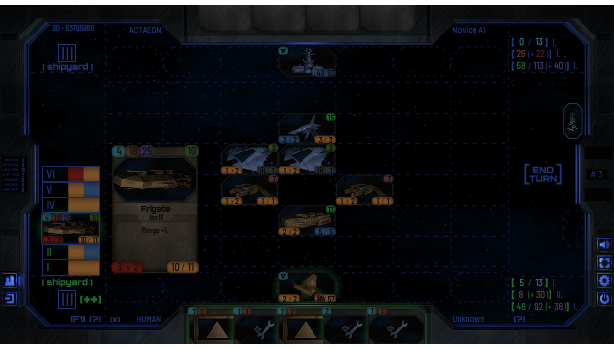
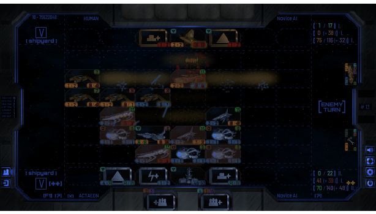
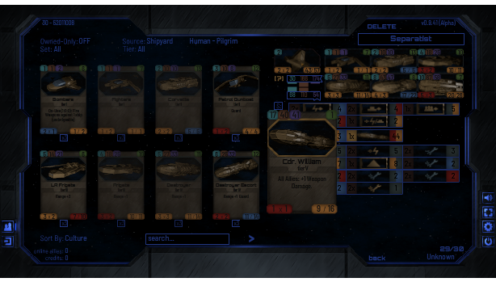

Even with stars in our hands, the struggle never ends.
Mankind has disbanded into numerous nations, travelling the galaxy inside massive motherstations in a desperate effort to keep the population and its civilization alive, willing to sacrifice anything to earn the required energy and resources from various planets and stars.
And they are not alone - but only the strongest will gain the ultimate price: the survival of their species.
Mankind has disbanded into numerous nations, travelling the galaxy inside massive motherstations in a desperate effort to keep the population and its civilization alive, willing to sacrifice anything to earn the required energy and resources from various planets and stars.
And they are not alone - but only the strongest will gain the ultimate price: the survival of their species.
About Farstar
Your people have chosen You to lead them through the stars in the infinite search for resources and new planets to colonize. There are many in the universe with the same goal however, and it falls onto You to protect Your civilization against any threats. Prepare Your fleet carefully, and be ready to react to anything that the opponent brings to the table.
Influenced by RTS PC games and table-top card games, FARSTAR: Exodus is an online collectible card game that brings much depth to the genre. Resources required to play cards are multiple and unforgiving: You must make sure that chosen strategy and politics work well with Your fleet and its abilities. Secondary mini-deck with six unique cards that are always available assures a much smaller impact of the starting hand and pushes the game towards a larger scale. Be ready to deploy Your ships into a 3x7 grid where their formation matters, as does the formation of enemy forces.
After many strategic decisions, separate tactical battle comes: Pick targets carefully, as attacking shields of same colour reduces damage greatly - that is, if Your ships are even fast enough to get to attack in the first place.
If You succeed... maybe Your people will find a new home one day.
Influenced by RTS PC games and table-top card games, FARSTAR: Exodus is an online collectible card game that brings much depth to the genre. Resources required to play cards are multiple and unforgiving: You must make sure that chosen strategy and politics work well with Your fleet and its abilities. Secondary mini-deck with six unique cards that are always available assures a much smaller impact of the starting hand and pushes the game towards a larger scale. Be ready to deploy Your ships into a 3x7 grid where their formation matters, as does the formation of enemy forces.
After many strategic decisions, separate tactical battle comes: Pick targets carefully, as attacking shields of same colour reduces damage greatly - that is, if Your ships are even fast enough to get to attack in the first place.
If You succeed... maybe Your people will find a new home one day.
• Become a Commander of Your own star fleet as the game eases You into its rules in a storytelling tutorial.
• Collect over 270 cards from 5 different factions and build the ultimate deck: Will You be the predator, or defend humanity against alien threat?
• Compete against AI or other players online: Raise Your Reputation in a Quick Match, or invite Friends to a duel!
• Trade Cards with other players in real-time: Just like You would in a physical card-room!
• Play for Free, or support the game to speed up Your progress!
• Collect over 270 cards from 5 different factions and build the ultimate deck: Will You be the predator, or defend humanity against alien threat?
• Compete against AI or other players online: Raise Your Reputation in a Quick Match, or invite Friends to a duel!
• Trade Cards with other players in real-time: Just like You would in a physical card-room!
• Play for Free, or support the game to speed up Your progress!
Screenshots




About Us
Filip Randák - Concept, Programming, Art, Audio
Also known as 'Gran', working as a freelance translator and web-banner designer since 2013, and operating under the 'DarkGran' brand since 2019 as a result of a life-time interest in games, computers and programming.
There are many more people to thank, the testers for instance, but two people in particular deserve truly special thanks:
Eliška "Apsalar" Machková
Jan "Jack" Andrš
Without them, Farstar would be an entirely different game.
Also known as 'Gran', working as a freelance translator and web-banner designer since 2013, and operating under the 'DarkGran' brand since 2019 as a result of a life-time interest in games, computers and programming.
There are many more people to thank, the testers for instance, but two people in particular deserve truly special thanks:
Eliška "Apsalar" Machková
Jan "Jack" Andrš
Without them, Farstar would be an entirely different game.
Links